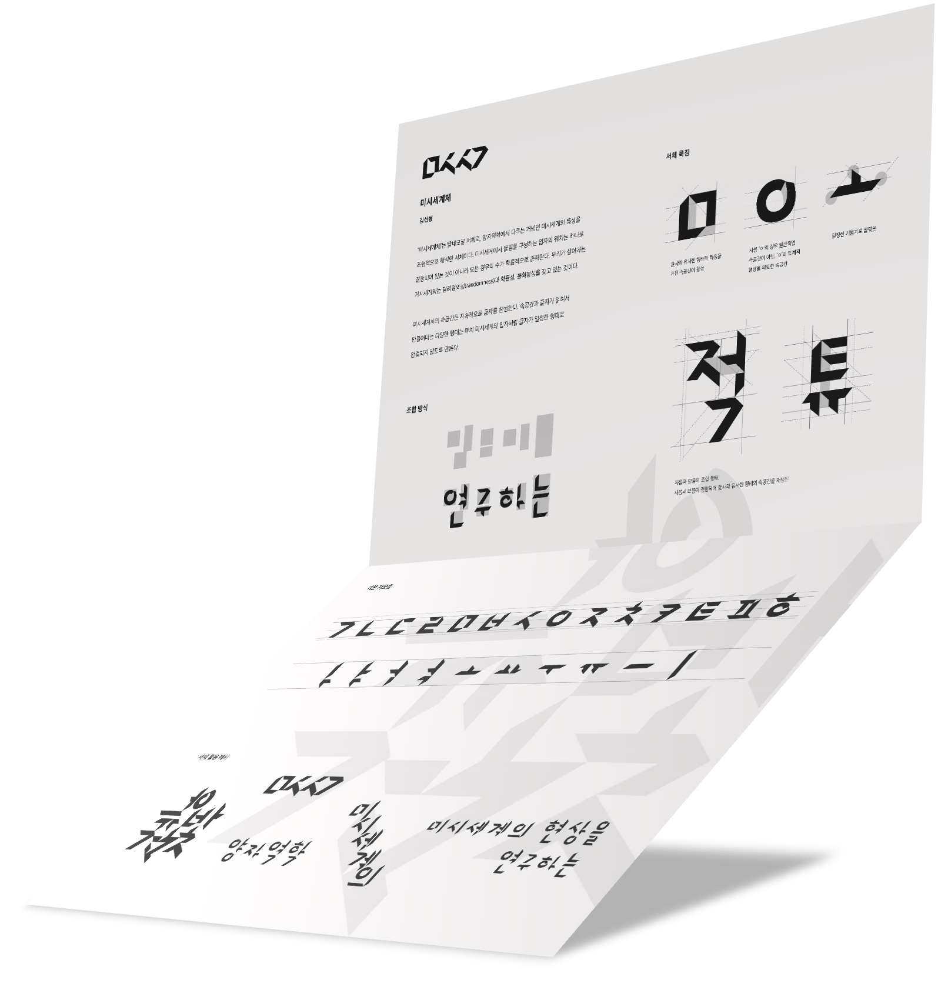
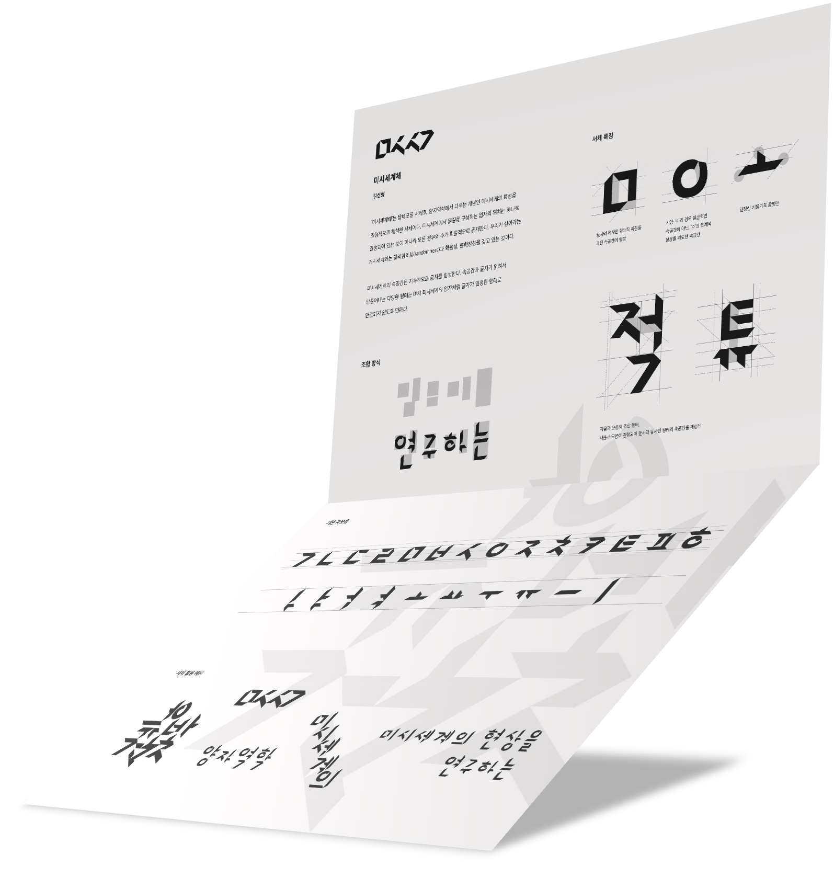

- 한국어
- English
안녕하세요, 저는 김선형입니다.
현재 서울대학교에서 시각디자인, 정보문화학을 함께 공부하고 있습니다. 그래픽디자인, 편집디자인, BX, UX, 전반적인 미술에 관심이 있습니다.
사람들의 경험을 의도적으로 설계하는 활동을 좋아합니다. 글을 읽는 경험, 상품을 구입할 때의 경험, 서비스를 사용할 때의 경험, 전시를 감상할 때의 경험 등. 그 중 어떤 매체를 다루는 것을 가장 좋아하는지는 차차 알아가고 있습니다.
여태껏 몰랐던 새로운 지식과 분야를 찾아다니는 것이 취미입니다. 위키백과 와 나무위키 , 그리고 유튜브 는 제 취미의 동반자입니다. 직간접적으로 습득한 지식을 사람들과 나누는 것을 좋아합니다. 일꾼들: 사고의 매커니즘(2021) 포스터는 그렇게 탄생했습니다. 한창 컴퓨터 하드웨어에 관심이 있을 때 만들었던 포스터입니다. 미시세계체(2021) 와 SHETI 프로젝트(2021) 또한 마찬가지입니다. 이 두 작업은 물리학과 천문학에 한창 관심이 생겼을 때 진행했던 작업입니다. 이러한 관심사가 이어져 코끼리를 냉장고에 넣는 방법(2022) 처럼 다양한 분야의 지식을 다루는 유머를 작업에 활용해보기도 했습니다.
책을 좋아하진 않지만 독서를 통해 남들의 생각을 엿보는 것을 좋아합니다. 올해 4월부터 서울대학교 디자인학회의 학회원 몇 명과 함께 월간독서모임 을 꾸려 매달 새로운 책을 읽고 있습니다.
글쓰기를 좋아하진 않지만 머릿속에만 떠다니고 있는 생각을 구체화하는 것을 좋아합니다. 작년 여름방학동안 서울대학교 디자인학회의 학회원 몇 명과 함께 주간생각 프로젝트(2021) 를 진행해 4개의 에세이를 작성했습니다. 뿐만 아니라 지속적으로 개인 블로그에서 일상 속에서 떠오른 생각이나 나누고 싶은 아이디어, 지식을 풀어놓고 있습니다.
2023년 1월부터 7월까지 네덜란드 헤이그로 교환학생을 갑니다. 네덜란드에서 생활하는 동안 한국에서 경험하지 못한 새로운 것들을 많이 접하고, 도전하려고 합니다.
개인적인 일상은 인스타그램 @shsta_ 에, 작업물은 @shwrks_ 에 기록하고 있습니다. 메일 주소는 shsnu@snu.ac.kr 입니다.
감사합니다.
Hello, I'm Seonhyeong Kim.
I am studying visual communication design at Seoul National University and interested in graphic design, editorial design, BX, and UX.
I enjoy to design someone's experience, reading, purchasing, using something, and visiting...
My hobby is to find new knowledge that I have never known before. I like to share them that I have acquired with people. Workers: The Mechanism of Thinking(2021) poster was born that way. It's a poster that I made when I was interested in computer hardware. The same is true of the Micro-World(2021) and the SHETI Project(2021) . They were produced when I was interested in physics and astronomy. This interest led to the use of humor that deals with knowledge in various fields, such as How to Put Elephants in the Refrigerator(2022) .
I am not a big fan of reading books, but I like to find other people's thoughts through reading. Since this April, I have been reading new books every month with several members of the Seoul National University Design Society.
I like to organize thoughts that are floating in my head. During last summer vacation, I worked on a Weekly Thought Project(2022) with some members of the Seoul National University Design Society and wrote four essays. In addition, I continue to release thoughts, ideas, and knowledge that I want to share in my daily life on my personal blog.
I will be an exchange student next semester at KABK, the Netherlands. I'm looking forward to do a lot of new things that I have never experienced before in Korea.
My daily life is recorded on Instagram @shsta_ and my work is recorded on @shwrks_ . The email address is shsnu@snu.ac.kr.
Thank you for visiting.